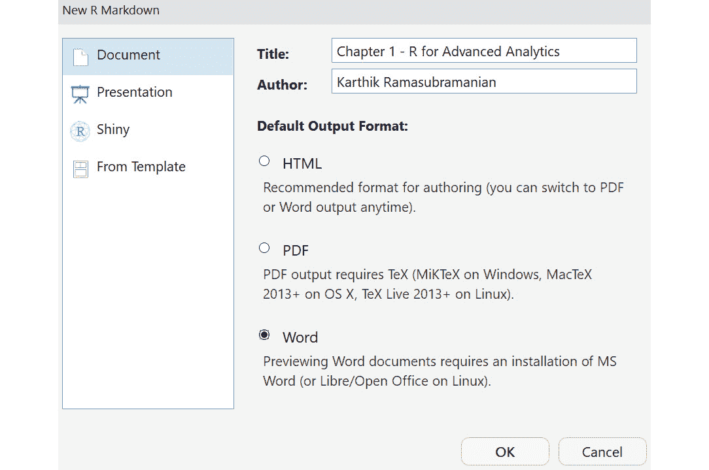
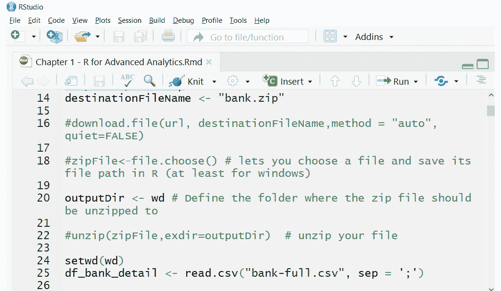
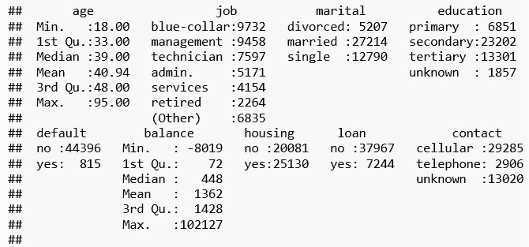
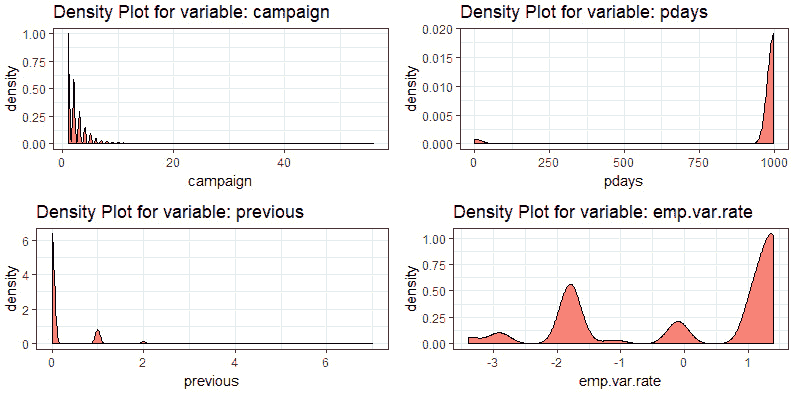
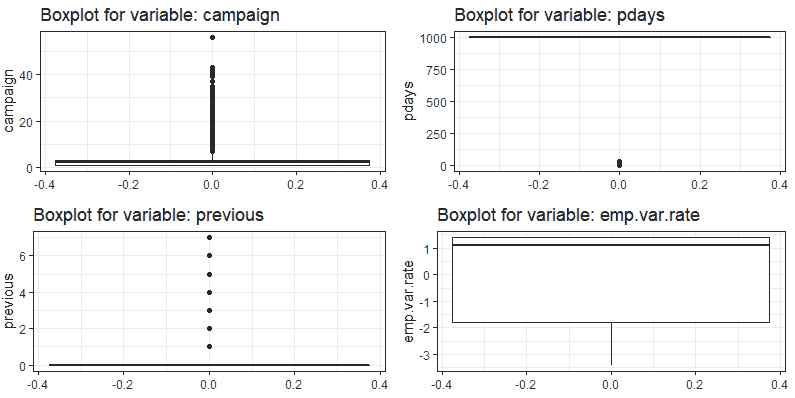
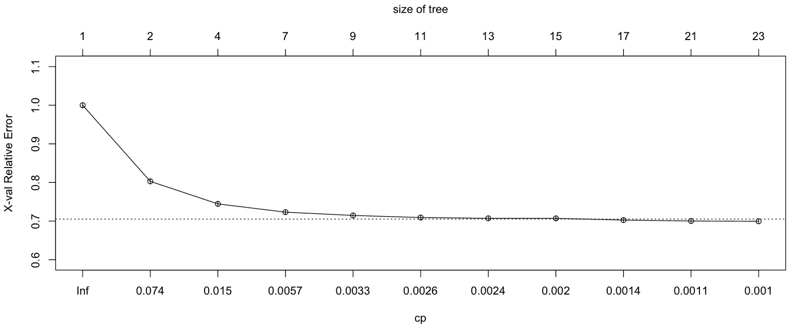
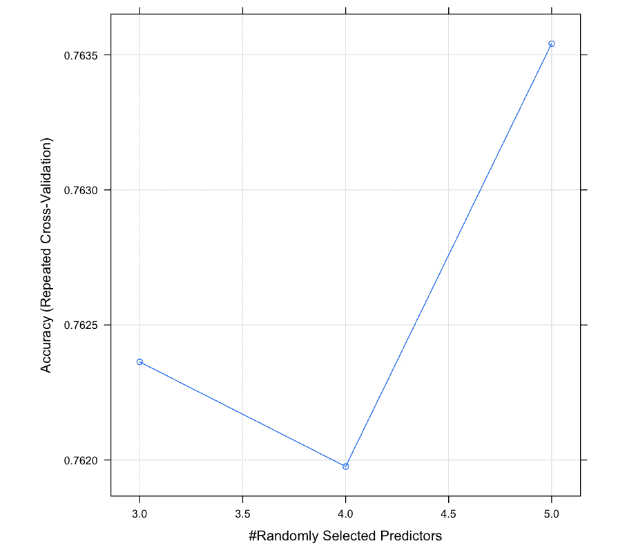

第 1 章:高级分析研究
活动 1:创建一个 R Markdown 文件来读取 CSV 文件并编写数据摘要
- 启动 RStudio 并导航至文件 | 新文件 | R Markdown 。
- 在新的 R Markdown 窗口中，提供标题和作者姓名，如下图所示。确保您选择了默认输出格式部分下的字选项:
图 1.13:在 Rstudio 中创建新的 r 降价文件
- 现在，使用
read.csv()方法读取bank-full.csv文件:图 1.14:使用 read.csv 方法读取数据
- 最后，使用
summary方法将摘要打印到 word 文件中:

图 1.15:使用汇总方法后的最终输出
活动 2:创建一个包含两个矩阵的列表，并访问这些值
- 通过从二项式分布中随机产生的数字创建两个大小为
10 x 4和4 x 5的矩阵(使用rbinom方法)。分别调用矩阵mat_A和mat_B:mat_A <- matrix(rbinom(n = 40, size = 100, prob = 0.4),nrow = 10, ncol=4) mat_B <- matrix(rbinom(n = 20, size = 100, prob = 0.4),nrow = 4, ncol=5)
- 现在，将这两个矩阵存储在一个列表中:
list_of_matrices <- list(mat_A = mat_A, mat_B =mat_B)
- 使用该列表，访问
mat_A的第 4 行第 2 列并存入变量A，访问mat_B的第 2 行第 1 列并存入变量B:A <- list_of_matrices[["mat_A"]][4,2] B <- list_of_matrices[["mat_B"]][2,1]
- Multiply the
AandBmatrices and subtract from row 2 and column 1 ofmat_A:list_of_matrices[["mat_A"]][2,1] - (A*B)
输出如下所示:
## [1] -1554
活动 3:使用 dplyr 和 tidyr 为银行数据中的所有数字变量创建一个包含五个汇总统计数据的数据框架
- 导入系统中的
dplyr和tidyr包:library(dplyr) library(tidyr) Warning: package 'tidyr' was built under R version 3.2.5
- 创建
df数据帧并将文件导入其中:df <- tbl_df(df_bank_detail)
- 使用
select()从银行数据中提取所有数值变量，并使用summarise_all()方法df_wide <- df %>% select(age, balance, duration, pdays) %>% summarise_all(funs(min = min, q25 = quantile(., 0.25), median = median, q75 = quantile(., 0.75), max = max, mean = mean, sd = sd))计算最小值、第一个四分位数、第三个四分位数、中值、平均值、最大值和标准偏差 - 结果是一个宽的数据框。4 个变量，7 个度量:
dim(df_wide) ## [1] 1 28
- Store the result in a DataFrame of wide format named
df_wide, reshape it using thetidyrfunctions, and, finally, convert the wide format to deep, use the gather, separate, and spread functions of thetidyrpackage:df_stats_tidy <- df_wide %>% gather(stat, val) %>% separate(stat, into = c("var", "stat"), sep = "_") %>% spread(stat, val) %>% select(var,min, q25, median, q75, max, mean, sd) # reorder columns print(df_stats_tidy)输出如下所示:
## # A tibble: 4 x 8 ## var min q25 median q75 max mean sd ## * <chr> <dbl> <dbl> <dbl> <dbl> <dbl> <dbl> <dbl> ## 1 age 18 33 39 48 95 40.93621 10.61876 ## 2 balance -8019 72 448 1428 102127 1362.27206 3044.76583 ## 3 duration 0 103 180 319 4918 258.16308 257.52781 ## 4 pdays -1 -1 -1 -1 871 40.19783 100.12875
第二章:数据的探索性分析
活动 4:绘制多个密度图和箱线图
- 首先，在 RStudio:
library(ggplot2) library(cowplot)
中加载必要的库和包 - 读取名为
df:df <- read.csv("bank-additional-full.csv",sep=';')的数据帧中的bank-additional-full.csv数据集 - 定义密度图的
plot_grid_numeric函数:plot_grid_numeric <- function(df,list_of_variables,ncols=2){ plt_matrix<-list() i<-1 for(column in list_of_variables){ plt_matrix[[i]]<-ggplot(data=df,aes_string(x=column)) + geom_density(fill="red",alpha =0.5) + ggtitle(paste("Density Plot for variable:",column)) + theme_bw() i<-i+1 } plot_grid(plotlist=plt_matrix,ncol=2) } - Plot the density plot for the
campaign,pdays,previous, andemp.var.ratevariables:plot_grid_numeric(df,c("campaign","pdays","previous","emp.var.rate"),2)输出如下所示:
图 2.27:活动、天数、先前和员工变动率变量的密度图
观察我们使用直方图获得的解释在密度图中也是明显真实的。因此，这是观察同一趋势的另一个替代图。
- Repeat step 4 for boxplot:
plot_grid_numeric <- function(df,list_of_variables,ncols=2){ plt_matrix<-list() i<-1 for(column in list_of_variables){ plt_matrix[[i]]<-ggplot(data=df,aes_string(y=column)) + geom_boxplot(outlier.colour="black") + ggtitle(paste("Boxplot for variable:",column)) + theme_bw() i<-i+1 } plot_grid(plotlist=plt_matrix,ncol=2) } plot_grid_numeric(df,c("campaign","pdays","previous","emp.var.rate"),2)输出如下所示:

图 2.28:活动、pdays、previous 和 emp.var.rate 变量的箱线图
现在，让我们探索数据集的最后四个数字变量，即nr.employed、euribor3m、cons.conf.index和duration，看看我们是否能得出一些有意义的见解。
第三章:监督学习简介
活动 5:绘制 PRES 和 PM2.5 之间的散点图，按月份划分
- 将
ggplot2包导入系统:library(ggplot2)
- 在
ggplot中，用变量PRES分配a()方法的组件。ggplot(data = PM25, aes(x = PRES, y = pm2.5, color = hour)) + geom_point()
- 在下一层的
geom_smooth()方法中，传递colour = "blue"来区分。geom_smooth(method='auto',formula=y~x, colour = "blue", size =1)
- Finally, in the
facet_wrap()layer, use themonthvariable to draw a separate segregation for each month.facet_wrap(~ month, nrow = 4)
最终的代码将如下所示:
ggplot(data = PM25, aes(x = PRES, y = pm2.5, color = hour)) + geom_point() + geom_smooth(method='auto',formula=y~x, colour = "blue", size =1) + facet_wrap(~ month, nrow = 4)
剧情如下:

图 3.19:显示 PRES 和 PM2.5 之间关系的散点图
活动 6:转换变量并导出新变量以构建模型
执行以下步骤来构建模型:
- 将所需的库和包导入系统:
library(dplyr) library(lubridate) library(tidyr) library(ggplot2) library(grid) library(zoo)
- 将年、月、日和小时组合成一个
datetime变量:PM25$datetime <- with(PM25, ymd_h(sprintf('%04d%02d%02d%02d', year, month, day,hour))) - 删除任意列中缺少值的行:
PM25_subset <- na.omit(PM25[,c("datetime","pm2.5")]) - 使用包
zoo中的rollapply()方法计算 PM2.5 的移动平均值；这是为了消除 PM2.5 读数中的任何噪音:PM25_three_hour_pm25_avg <- rollapply(zoo(PM25_subset$pm2.5,PM25_subset$datetime), 3, mean)
- 创建 PM25 污染的两个级别，
0–Normal、1-Above Normal。我们也可以创造两个以上的层次；然而，对于二元分类效果最好的逻辑回归，我们使用了两个级别:PM25_three_hour_pm25_avg <- as.data.frame(PM25_three_hour_pm25_avg) PM25_three_hour_pm25_avg$timestamp <- row.names(PM25_three_hour_pm25_avg) row.names(PM25_three_hour_pm25_avg) <- NULL colnames(PM25_three_hour_pm25_avg) <- c("avg_pm25","timestamp") PM25_three_hour_pm25_avg$pollution_level <- ifelse(PM25_three_hour_pm25_avg$avg_pm25 <= 35, 0,1) PM25_three_hour_pm25_avg$timestamp <- as.POSIXct(PM25_three_hour_pm25_avg$timestamp, format= "%Y-%m-%d %H:%M:%S",tz="GMT") - 将得到的数据帧(PM25_three_hour_pm25_avg)与其他环境变量的值合并，例如我们在线性回归模型中使用的
TEMP、DEWP和Iws:PM25_for_class <- merge(PM25_three_hour_pm25_avg, PM25[,c("datetime","TEMP","DEWP","PRES","Iws","cbwd","Is","Ir")], by.x = "timestamp",by.y = "datetime") - 使用温度、DEWP 和 Iws 变量:
PM25_logit_model <- glm(pollution_level ~ DEWP + TEMP + Iws, data = PM25_for_class,family=binomial(link='logit'))
在pollution_level上拟合广义线性模型(glm - Summarize the model:
summary(PM25_logit_model)
输出如下所示:
Call: glm(formula = pollution_level ~ DEWP + TEMP + Iws, family = binomial(link = "logit"), data = PM25_for_class) Deviance Residuals: Min 1Q Median 3Q Max -2.4699 -0.5212 0.4569 0.6508 3.5824 Coefficients: Estimate Std. Error z value Pr(>|z|) (Intercept) 2.5240276 0.0273353 92.34 <2e-16 *** DEWP 0.1231959 0.0016856 73.09 <2e-16 *** TEMP -0.1028211 0.0018447 -55.74 <2e-16 *** Iws -0.0127037 0.0003535 -35.94 <2e-16 *** --- Signif. codes: 0 '***' 0.001 '**' 0.01 '*' 0.05 '.' 0.1 ' ' 1 (Dispersion parameter for binomial family taken to be 1) Null deviance: 49475 on 41754 degrees of freedom Residual deviance: 37821 on 41751 degrees of freedom AIC: 37829 Number of Fisher Scoring iterations: 5
第四章:回归
活动 7:使用模型对象打印各种属性，不使用汇总功能
- First, print the coefficient values using the following command. Make sure the output is like the output of the
summaryfunction using thecoefficientsoption. The coefficients are the fitted values from the model that uses the OLS algorithm:multiple_PM25_linear_model$coefficients
输出如下所示:
(Intercept) DEWP TEMP Iws 161.1512066 4.3841960 -5.1335111 -0.2743375
- Find the residual value (difference) of the predicted and actual values of PM2.5, which should be as small as possible. Residual reflects how far the fitted values using the coefficients are from the actual value.
multiple_PM25_linear_model$residuals
输出如下所示:
25 26 27 28 17.95294914 32.81291348 21.38677872 26.34105878 29 30 31 32 - Next, find the fitted values that should be closer to the actual PM2.5 for the best model. Using the coefficients, we can compute the fitted values:
multiple_PM25_linear_model$fitted.values
输出如下所示:
25 26 27 28 29 111.047051 115.187087 137.613221 154.658941 154.414781 30 31 32 33 34 - Find the R-Squared values. They should look the same as the one you obtained in the output of the
summaryfunction next to the text Multiple R-squared. R-Square helps in evaluating the model performance. If the value is closer to 1, the better the model is:summary(multiple_PM25_linear_model)$r.squared
输出如下所示:
[1] 0.2159579
- Find the F-Statistic values. Make sure the output should look same as the one you obtained in the output of the
summaryfunction next to the text F-Statistics. This will tell you if your model fits better than just using the mean of the target variable. In many practical applications, F-Statistic is used along with p-values:summary(multiple_PM25_linear_model)$fstatistic
输出如下所示:
value numdf dendf 3833.506 3.000 41753.000
- Finally, find the coefficient p-values and make sure the values should look the same as the one you obtained in the output of the
summaryfunction under Coefficients for each variable. It will be present under the column titledPr(>|t|):. If the value is less than 0.05, the variable is statistically significant in predicting the target variable:summary(multiple_PM25_linear_model)$coefficients[,4]
输出如下所示:
(Intercept) DEWP TEMP Iws 0.000000e+00 0.000000e+00 0.000000e+00 4.279601e-224
理解模型的属性与获得预测同样重要，尤其是在线性回归中。它们有助于很好地解释模型，并将问题与其真实用例联系起来。
第五章:分类
活动 8:建立具有附加特征的逻辑回归模型
- 为活动
df_copy <- df_new
在df_copy中创建df_new数据帧的副本 - 为三个选定的数字特征中的每一个创建平方根、平方幂和立方幂变换的新特征:
df_copy$MaxTemp2 <- df_copy$MaxTemp ^2 df_copy$MaxTemp3 <- df_copy$MaxTemp ^3 df_copy$MaxTemp_root <- sqrt(df_copy$MaxTemp) df_copy$Rainfall2 <- df_copy$Rainfall ^2 df_copy$Rainfall3 <- df_copy$Rainfall ^3 df_copy$Rainfall_root <- sqrt(df_copy$Rainfall) df_copy$Humidity3pm2 <- df_copy$Humidity3pm ^2 df_copy$Humidity3pm3 <- df_copy$Humidity3pm ^3 df_copy$Humidity3pm_root <- sqrt(df_copy$Humidity3pm)
- 将
df_copy数据集分成 70:30 比例的训练和测试:#Setting seed for reproducibility set.seed(2019) #Creating a list of indexes for the training dataset (70%) train_index <- sample(seq_len(nrow(df_copy)),floor(0.7 * nrow(df_copy))) #Split the data into test and train train_new <- df_copy[train_index,] test_new <- df_copy[-train_index,]
- 用新的训练数据拟合逻辑回归模型:
model <- glm(RainTomorrow~., data=train_new ,family=binomial(link='logit'))
- Predict the responses using the fitted model on the train data and create a confusion matrix:
print("Training data results -") pred_train <-factor(ifelse(predict(model,newdata=train_new, type = "response") > 0.5,"Yes","No")) #Create the Confusion Matrix train_metrics <- confusionMatrix(pred_train, train_new$RainTomorrow,positive="Yes") print(train_metrics)输出如下所示:
"Training data results -" Confusion Matrix and Statistics Reference Prediction No Yes No 58330 8650 Yes 3161 8906 Accuracy : 0.8506 95% CI : (0.8481, 0.8531) No Information Rate : 0.7779 P-Value [Acc > NIR] : < 2.2e-16 Kappa : 0.5132 Mcnemar's Test P-Value : < 2.2e-16 Sensitivity : 0.5073 Specificity : 0.9486 Pos Pred Value : 0.7380 Neg Pred Value : 0.8709 Prevalence : 0.2221 Detection Rate : 0.1127 Detection Prevalence : 0.1527 Balanced Accuracy : 0.7279 'Positive' Class : Yes - Predict the responses using the fitted model on test data and create a confusion matrix:
print("Test data results -") pred_test <-factor(ifelse(predict(model,newdata=test_new, type = "response") > 0.5,"Yes","No")) #Create the Confusion Matrix test_metrics <- confusionMatrix(pred_test, test_new$RainTomorrow,positive="Yes") print(test_metrics)输出如下所示:
"Test data results -" Confusion Matrix and Statistics Reference Prediction No Yes No 25057 3640 Yes 1358 3823 Accuracy : 0.8525 95% CI : (0.8486, 0.8562) No Information Rate : 0.7797 P-Value [Acc > NIR] : < 2.2e-16 Kappa : 0.5176 Mcnemar's Test P-Value : < 2.2e-16 Sensitivity : 0.5123 Specificity : 0.9486 Pos Pred Value : 0.7379 Neg Pred Value : 0.8732 Prevalence : 0.2203 Detection Rate : 0.1128 Detection Prevalence : 0.1529 Balanced Accuracy : 0.7304 'Positive' Class : Yes
活动 9:用附加控制参数创建一个决策树模型
- 加载
rpart库。library(rpart)
- 用新值
minsplit =15和cp = 0.00:control = rpart.control( minsplit = 15, cp = 0.001)创建决策树的控制对象 - 用列车数据拟合树模型，并将控制对象传递给
rpart函数:tree_model <- rpart(RainTomorrow~.,data=train, control = control)
- Plot the complexity parameter plot to see how the tree performs at different values of
CP:plotcp(tree_model)
输出如下所示:
图 5.10:决策树输出
- Use the fitted model to make predictions on train data and create the confusion matrix:
print("Training data results -") pred_train <- predict(tree_model,newdata = train,type = "class") confusionMatrix(pred_train, train$RainTomorrow,positive="Yes")输出如下所示:
"Training data results -" Confusion Matrix and Statistics Reference Prediction No Yes No 58494 9032 Yes 2997 8524 Accuracy : 0.8478 95% CI : (0.8453, 0.8503) No Information Rate : 0.7779 P-Value [Acc > NIR] : < 2.2e-16 Kappa : 0.4979 Mcnemar's Test P-Value : < 2.2e-16 Sensitivity : 0.4855 Specificity : 0.9513 Pos Pred Value : 0.7399 Neg Pred Value : 0.8662 Prevalence : 0.2221 Detection Rate : 0.1078 Detection Prevalence : 0.1457 Balanced Accuracy : 0.7184 'Positive' Class : Yes - Use the fitted model to make predictions on test data and create the confusion matrix:
print("Test data results -") pred_test <- predict(tree_model,newdata = test,type = "class") confusionMatrix(pred_test, test$RainTomorrow,positive="Yes")输出如下所示:
"Test data results -" Confusion Matrix and Statistics Reference Prediction No Yes No 25068 3926 Yes 1347 3537 Accuracy : 0.8444 95% CI : (0.8404, 0.8482) No Information Rate : 0.7797 P-Value [Acc > NIR] : < 2.2e-16 Kappa : 0.4828 Mcnemar's Test P-Value : < 2.2e-16 Sensitivity : 0.4739 Specificity : 0.9490 Pos Pred Value : 0.7242 Neg Pred Value : 0.8646 Prevalence : 0.2203 Detection Rate : 0.1044 Detection Prevalence : 0.1442 Balanced Accuracy : 0.7115 'Positive' Class : Yes
活动 10:用更多的树构建一个随机森林模型
- 首先，使用下面的命令导入
randomForest库:library(randomForest)
- 构建具有所有可用独立功能的随机森林模型。将模型中的树的数量定义为 500。
rf_model <- randomForest(RainTomorrow ~ . , data = train, ntree = 500, importance = TRUE, maxnodes=60) - Evaluate on training data:
print("Training data results -") pred_train <- predict(rf_model,newdata = train,type = "class") confusionMatrix(pred_train, train$RainTomorrow,positive="Yes")输出如下所示:
"Training data results -" Confusion Matrix and Statistics Reference Prediction No Yes No 59638 10169 Yes 1853 7387 Accuracy : 0.8479 95% CI : (0.8454, 0.8504) No Information Rate : 0.7779 P-Value [Acc > NIR] : < 2.2e-16 Kappa : 0.4702 Mcnemar's Test P-Value : < 2.2e-16 Sensitivity : 0.42077 Specificity : 0.96987 Pos Pred Value : 0.79946 Neg Pred Value : 0.85433 Prevalence : 0.22210 Detection Rate : 0.09345 Detection Prevalence : 0.11689 Balanced Accuracy : 0.69532 'Positive' Class : Yes - Evaluate on test data:
print("Test data results -") pred_test <- predict(rf_model,newdata = test,type = "class") confusionMatrix(pred_test, test$RainTomorrow,positive="Yes")输出如下所示:
"Test data results -" Confusion Matrix and Statistics Reference Prediction No Yes No 25604 4398 Yes 811 3065 Accuracy : 0.8462 95% CI : (0.8424, 0.8501) No Information Rate : 0.7797 P-Value [Acc > NIR] : < 2.2e-16 Kappa : 0.4592 Mcnemar's Test P-Value : < 2.2e-16 Sensitivity : 0.41069 Specificity : 0.96930 Pos Pred Value : 0.79076 Neg Pred Value : 0.85341 Prevalence : 0.22029 Detection Rate : 0.09047 Detection Prevalence : 0.11441 Balanced Accuracy : 0.69000 'Positive' Class : Yes
第六章:特征选择和降维
活动 11:将北京 PM2.5 数据集的 CBWD 特征转换为独热编码列
- 将北京 PM2.5 数据集读入数据帧
PM25:PM25 <- read.csv("PRSA_data_2010.1.1-2014.12.31.csv") - 创建一个变量
cbwd_one_hot，用于存储dummyVars函数的结果，并将~ cbwd作为第一个参数:library(caret) cbwd_one_hot <- dummyVars(" ~ cbwd", data = PM25) - 在
cbwd_one_hot上使用predict()函数的输出，并将其作为数据帧:cbwd_one_hot <- data.frame(predict(cbwd_one_hot, newdata = PM25))
- 从
PM25数据帧:PM25$cbwd <- NULL
中删除原来的cbwd变量 - 使用
cbind()功能，将cbwd_one_hot添加到PM25数据帧:PM25 <- cbind(PM25, cbwd_one_hot)
- Print the top 6 rows of
PM25:head(PM25)
前面命令的输出如下:
## No year month day hour pm2.5 DEWP TEMP PRES Iws Is Ir cbwd.cv cbwd.NE ## 1 1 2010 1 1 0 NA -21 -11 1021 1.79 0 0 0 0 ## 2 2 2010 1 1 1 NA -21 -12 1020 4.92 0 0 0 0 ## 3 3 2010 1 1 2 NA -21 -11 1019 6.71 0 0 0 0 ## 4 4 2010 1 1 3 NA -21 -14 1019 9.84 0 0 0 0 ## 5 5 2010 1 1 4 NA -20 -12 1018 12.97 0 0 0 0 ## 6 6 2010 1 1 5 NA -19 -10 1017 16.10 0 0 0 0 ## cbwd.NW cbwd.SE ## 1 1 0 ## 2 1 0 ## 3 1 0 ## 4 1 0 ## 5 1 0 ## 6 1 0
在head(PM25)命令的输出中观察变量cbwd:它现在被转换成带有NE、NW和SE后缀的一键编码列。
第 7 章:模型改进
活动 12:执行重复的 K-Fold 交叉验证和网格搜索优化
- 加载练习所需的
mlbench、caret和dplyr:library(mlbench) library(dplyr) library(caret)
- 将
PimaIndianDiabetes数据集从mlbench包:data(PimaIndiansDiabetes) df<-PimaIndiansDiabetes
加载到内存中 - 设定一个
seed值为2019用于再现性:set.seed(2019)
- 使用
caret包中的trainControl函数定义 K 倍验证对象，并将method定义为repeatedcv而不是cv。在trainControl函数中为验证中的重复次数定义一个额外的构造repeats = 10:train_control = trainControl(method = "repeatedcv", number=5, repeats = 10, savePredictions = TRUE,verboseIter = TRUE)
- 将随机森林模型的超参数
mtry的网格定义为(3,4,5):parameter_values = expand.grid(mtry=c(3,4,5))
- 用网格值、交叉验证对象和随机森林分类器拟合模型:
model_rf_kfold<- train(diabetes~., data=df, trControl=train_control, method="rf", metric= "Accuracy", tuneGrid = parameter_values)
- 通过打印平均精确度和精确度的标准偏差来研究模型性能:
print(paste("Average Accuracy :",mean(model_rf_kfold$resample$Accuracy))) print(paste("Std. Dev Accuracy :",sd(model_rf_kfold$resample$Accuracy))) - Study the model performance by plotting the accuracy across different values of the hyperparameter:
plot(model_rf_kfold)
最终输出如下:

图 7.17:不同超参数值的模型性能精确度
在这个图中，我们可以看到我们在同一个模型上执行重复的 k-fold 交叉验证和网格搜索优化。
第八章:模型部署
活动 13:使用水管工部署一个 R 模型
- 创建一个
model.r脚本，该脚本将加载所需的库、数据、拟合回归模型和必要的函数来预测未知数据。 - 加载包含此活动数据的
mlbench库:library(mlbench)
- 将
BostonHousing数据载入数据帧df:data(BostonHousing) df<-BostonHousing
- 使用 df 的前
400行创建训练数据集，并使用剩余的train <- df[1:400,] test <- df[401:dim(df)[1],]
行进行测试 - 用
lm函数拟合一个逻辑回归模型，因变量为medv(中值)，10 个自变量，如:crim、zn、indus、chas、nox、rm、age、dis、rad、tax。model <- lm(medv~crim+zn+indus+chas+ nox+rm+age+dis+rad+tax,data=train)
- 定义一个模型端点为
predict_data；这将被用作管道工的 API 端点:#' @get /predict_data function(crim,zn,indus,chas,nox,rm,age,dis,rad,tax){ - 在该函数中，将参数转换为数字和因子(因为 API 调用将仅将它们作为字符串传递):
crim <- as.numeric(crim) zn <- as.numeric(zn) indus <- as.numeric(indus) chas <- as.factor(chas) nox <- as.numeric(nox) rm <- as.numeric(rm) age <- as.numeric(age) dis <- as.numeric(dis) rad <- as.numeric(rad) tax <- as.numeric(tax)
- 将模型的 10 个独立特性包装成一个名为
sample的数据帧，列的名称相同:sample <- data.frame(crim = crim, zn = zn, indus = indus, chas = chas, nox = nox, rm = rm, age = age, dis = dis, rad = rad, tax = tax ) - Pass the
sampleDataFrame to the predict function with the model (created in the 4th step) and return predictions:y_pred<-predict(model,newdata=sample) list(Answer=y_pred) }
整个
model.r文件将如下所示:library(mlbench) data(BostonHousing) df<-BostonHousing train <- df[1:400,] test <- df[401:dim(df)[1],] model <- lm(medv~crim+zn+indus+chas+nox+rm+age+dis+rad+tax,data=train) #' @get /predict_data function(crim,zn,indus,chas,nox,rm,age,dis,rad,tax){ crim <- as.numeric(crim) zn <- as.numeric(zn) indus <- as.numeric(indus) chas <- as.factor(chas) nox <- as.numeric(nox) rm <- as.numeric(rm) age <- as.numeric(age) dis <- as.numeric(dis) rad <- as.numeric(rad) tax <- as.numeric(tax) sample <- data.frame(crim = crim, zn = zn, indus = indus, chas = chas, nox = nox, rm = rm, age = age, dis = dis, rad = rad, tax = tax ) y_pred<-predict(model,newdata=sample) list(Answer=y_pred) } - 加载
plumber库。library(plumber)
- 使用
plumb函数创建一个管道工对象，并传递model.r文件(在第 1 部分中创建)。r <- plumb(model.r)
- 通过将主机名作为
localhost或127.0.0.1和一个端口(比如说8080)来运行 plumber 对象。http://127.0.0.1:8080/
- Test the deployed model using the browser or Postman and invoke the API.
API 调用:
http://127.0.0.1:8080/predict_
ata 吗？CRI = 0.01 & Zn = 18 & indu = 2.3 & chas = 0 & NOx = 0.5 & RM = 6(& s)
年龄=65&dis=4&rad=1&tax=242
{"Answer":[22.5813]}
第 9 章:顶点工程——基于研究论文
活动 14:使用 classif 获得二进制性能步骤。C50 学习者而不是 classif.rpart
- Define the algorithm adaptation methods:
multilabel.lrn3 = makeLearner("multilabel.rFerns") multilabel.lrn4 = makeLearner("multilabel.randomForestSRC") multilabel.lrn3输出如下所示:
## Learner multilabel.rFerns from package rFerns ## Type: multilabel ## Name: Random ferns; Short name: rFerns ## Class: multilabel.rFerns ## Properties: numerics,factors,ordered ## Predict-Type: response ## Hyperparameters:
- Use the problem transformation method, and change the
classif.rpartlearner toclassif.C50:lrn = makeLearner("classif.C50", predict.type = "prob") multilabel.lrn1 = makeMultilabelBinaryRelevanceWrapper(lrn) multilabel.lrn2 = makeMultilabelNestedStackingWrapper(lrn)注意
您需要安装
C50包来运行这段代码。 - Print the learner details:
lrn
输出如下所示:
## Learner classif.C50 from package C50 ## Type: classif ## Name: C50; Short name: C50 ## Class: classif.C50 ## Properties: twoclass,multiclass,numerics,factors,prob,missings,weights ## Predict-Type: prob ## Hyperparameters:
- Print the multilabel learner details:
multilabel.lrn1
输出如下所示:
## Learner multilabel.binaryRelevance.classif.C50 from package C50 ## Type: multilabel ## Name: ; Short name: ## Class: MultilabelBinaryRelevanceWrapper ## Properties: numerics,factors,missings,weights,prob,twoclass,multiclass ## Predict-Type: prob ## Hyperparameters:
- 使用与训练数据集相同的数据集训练模型:
df_nrow <- nrow(df_scene) df_all_index <- c(1:df_nrow) train_index <- sample(1:df_nrow, 0.7*df_nrow) test_index <- setdiff(df_all_index,train_index) scene_classi_mod = train(multilabel.lrn1, scene.task, subset = train_index)
- Print the model details:
scene_classi_mod
输出如下所示:
## Model for learner.id=multilabel.binaryRelevance.classif.C50; learner.class=MultilabelBinaryRelevanceWrapper ## Trained on: task.id = multi; obs = 1684; features = 294 ## Hyperparameters:
- Predict the output using the
C50model we created for the test dataset:pred = predict(scene_classi_mod, task = scene.task, subset = test_index) names(as.data.frame(pred))
输出如下所示:
## [1] "id" "truth.Beach" "truth.Sunset" ## [4] "truth.FallFoliage" "truth.Field" "truth.Mountain" ## [7] "truth.Urban" "prob.Beach" "prob.Sunset" ## [10] "prob.FallFoliage" "prob.Field" "prob.Mountain" ## [13] "prob.Urban" "response.Beach" "response.Sunset" ## [16] "response.FallFoliage" "response.Field" "response.Mountain" ## [19] "response.Urban"
- Print the performance measures:
MEASURES = list(multilabel.hamloss, multilabel.f1, multilabel.subset01, multilabel.acc, multilabel.tpr, multilabel.ppv) performance(pred, measures = MEASURES)
输出如下所示:
## multilabel.hamloss multilabel.f1 multilabel.subset01 ## 0.1258645 0.5734901 0.5532503 ## multilabel.acc multilabel.tpr multilabel.ppv ## 0.5412633 0.6207930 0.7249104
- Print the performance measures for the
listMeasuresvariable:listMeasures("multilabel")输出如下所示:
## [1] "featperc" "multilabel.tpr" "multilabel.hamloss" ## [4] "multilabel.subset01" "timeboth" "timetrain" ## [7] "timepredict" "multilabel.ppv" "multilabel.f1" ## [10] "multilabel.acc"
- Run the resampling with cross-validation method:
rdesc = makeResampleDesc(method = "CV", stratify = FALSE, iters = 3) r = resample(learner = multilabel.lrn1, task = scene.task, resampling = rdesc,measures = list(multilabel.hamloss), show.info = FALSE) r
输出如下所示:
## Resample Result ## Task: multi ## Learner: multilabel.binaryRelevance.classif.C50 ## Aggr perf: multilabel.hamloss.test.mean=0.1335695 ## Runtime: 72.353
- Print the binary performance:
getMultilabelBinaryPerformances(r$pred, measures = list(acc, mmce, auc))
输出如下所示:
## acc.test.mean mmce.test.mean auc.test.mean ## Beach 0.8608226 0.13917740 0.8372448 ## Sunset 0.9401745 0.05982551 0.9420085 ## FallFoliage 0.9081845 0.09181554 0.9008202 ## Field 0.8998754 0.10012464 0.9134458 ## Mountain 0.7710843 0.22891566 0.7622767 ## Urban 0.8184462 0.18155380 0.7837401